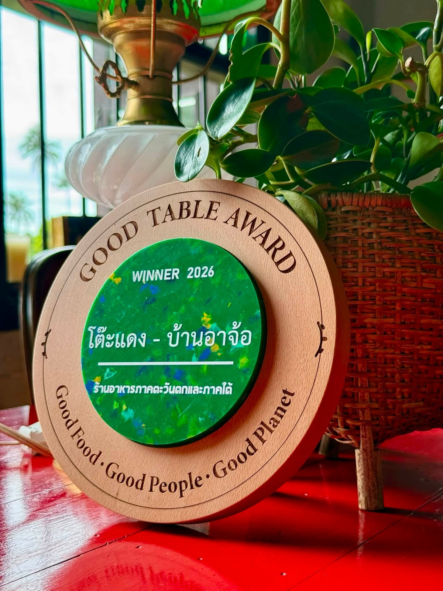
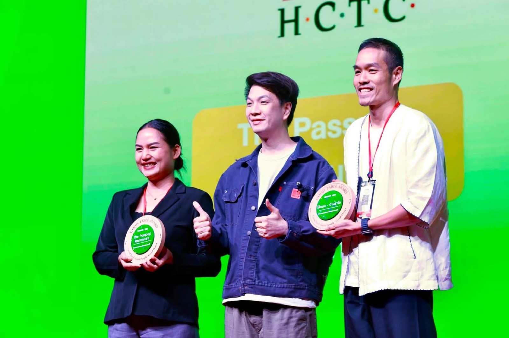
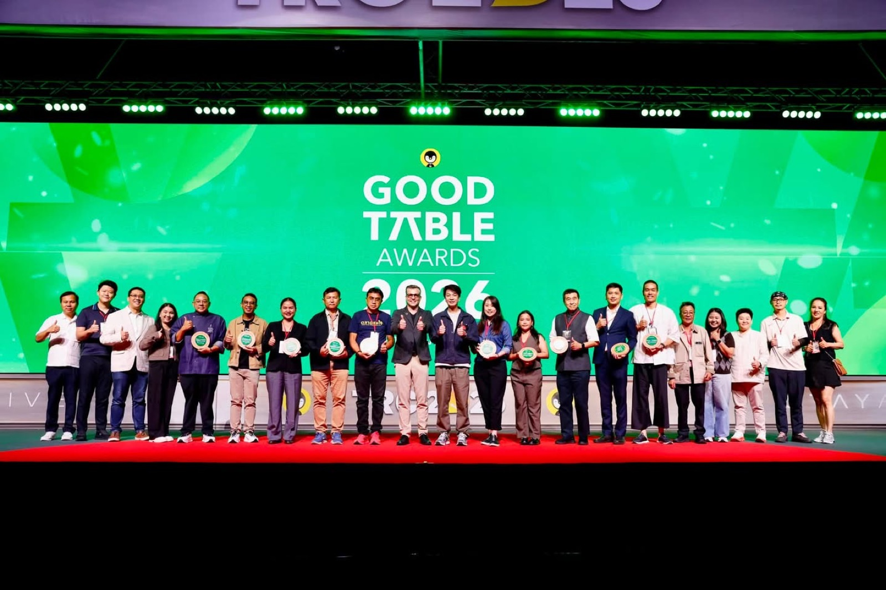
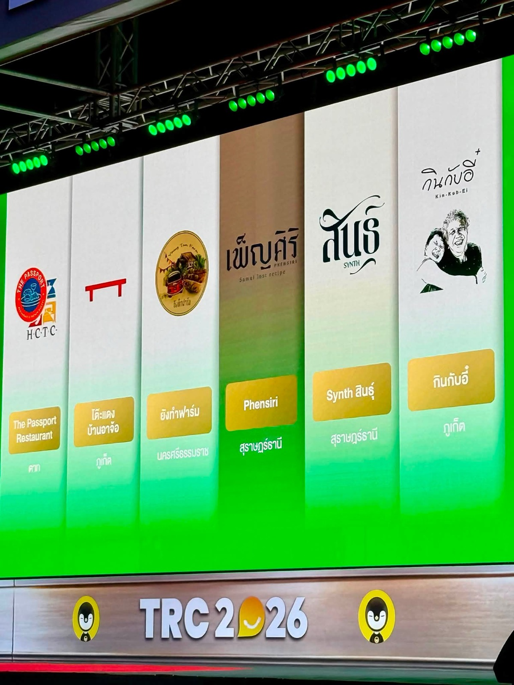

2569 · รางวัล · เหตุการณ์
Good Table Award 2026 — โต๊ะแดงภูเก็ต ประเภทร้านอาหารภาคใต้




โพสต์ 31 ส.ค. 2569:
Good Table Award 2026 🌿💯
ร้านอาหารขับเคลื่อนธุรกิจอย่างรับผิดชอบ 💚
ขอบคุณคณะกรรมการและทีมงานต่อเพนกวิ้น 💛 ที่มอบรางวัลนี้ให้ #โต๊ะแดงภูเก็ต ประเภทร้านอาหารภาคใต้นะครับ ❤️
โพสต์ 1 ก.ย. 2569:
Good Table Award 🌿✨
Good Food - Good People - Good Planet
เก็บตกภาพในงาน รวมผู้ประกอบการ เชฟ และสวนเกษตรที่ได้รับเลือก ตั้งใจคิด ตั้งใจทำ ตั้งใจดี ขอบคุณทีมงาน #torpenguin ที่สร้างรางวัลเป็นกำลังใจให้กับคนทำงาน ยินดีกับทุกคนที่ได้รับรางวัลด้วยครับ 😇❤️
ทุกวันนี้ฝนตกหนักที ก้อกลัวน้ำจะท่วมบ้าน แดดออกหน้าฝนนี่ร้อนขนาด น้ำฉีดก้นยังร้อนจนลวก 😅 ภัยพิบัติแรงขึ้นทุกที 😖 นาทีนี้คนละไม้คนละมืออาจไม่พอแล้ว ต้องทำทุกอย่างเท่าที่จะทำได้ 💪🌿
#longdaengPhuket 🧧
#tohdaengPhuket 🧧
#บ้านอาจ้อ ❤️